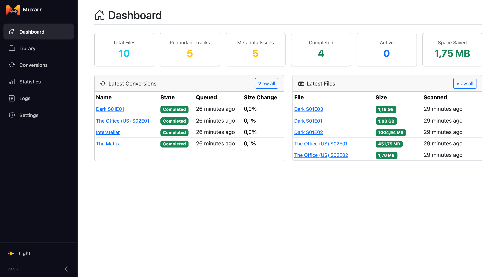
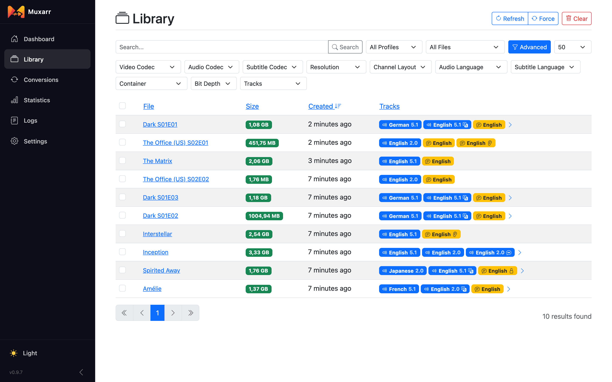
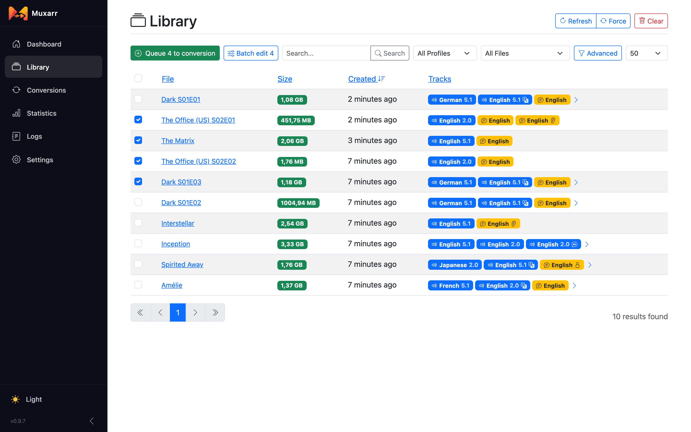
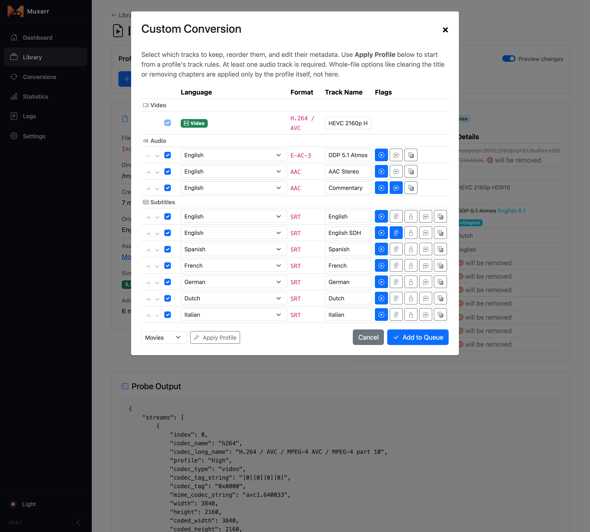
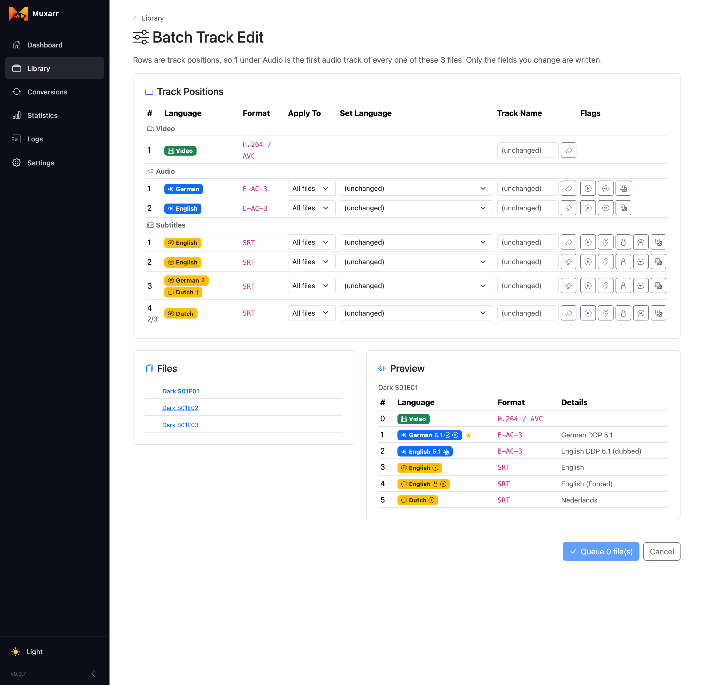
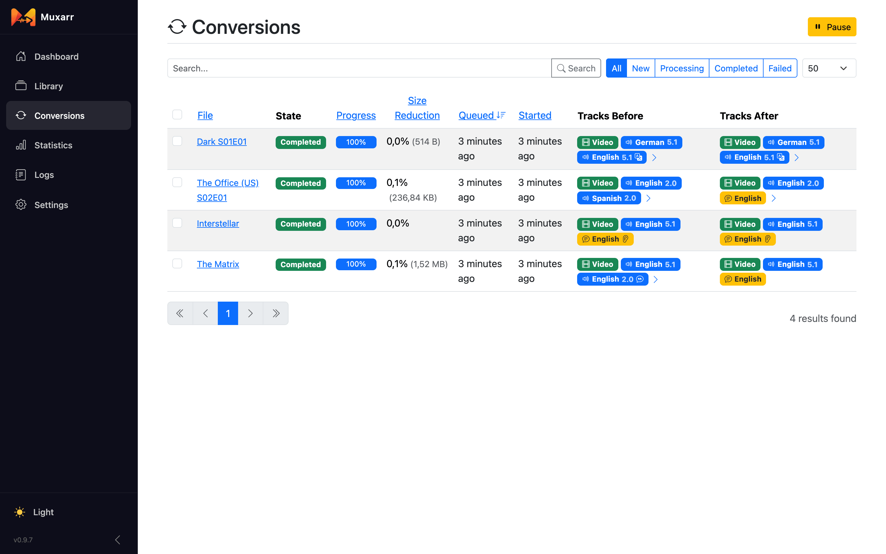
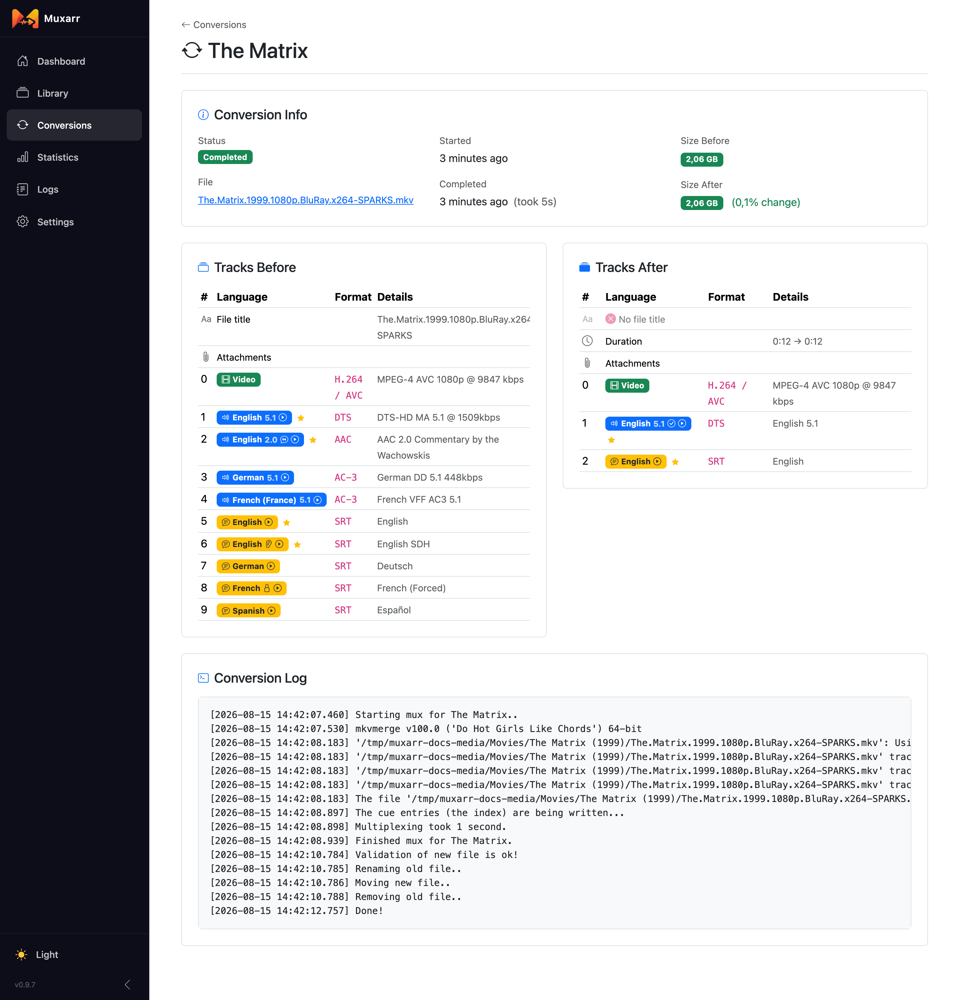
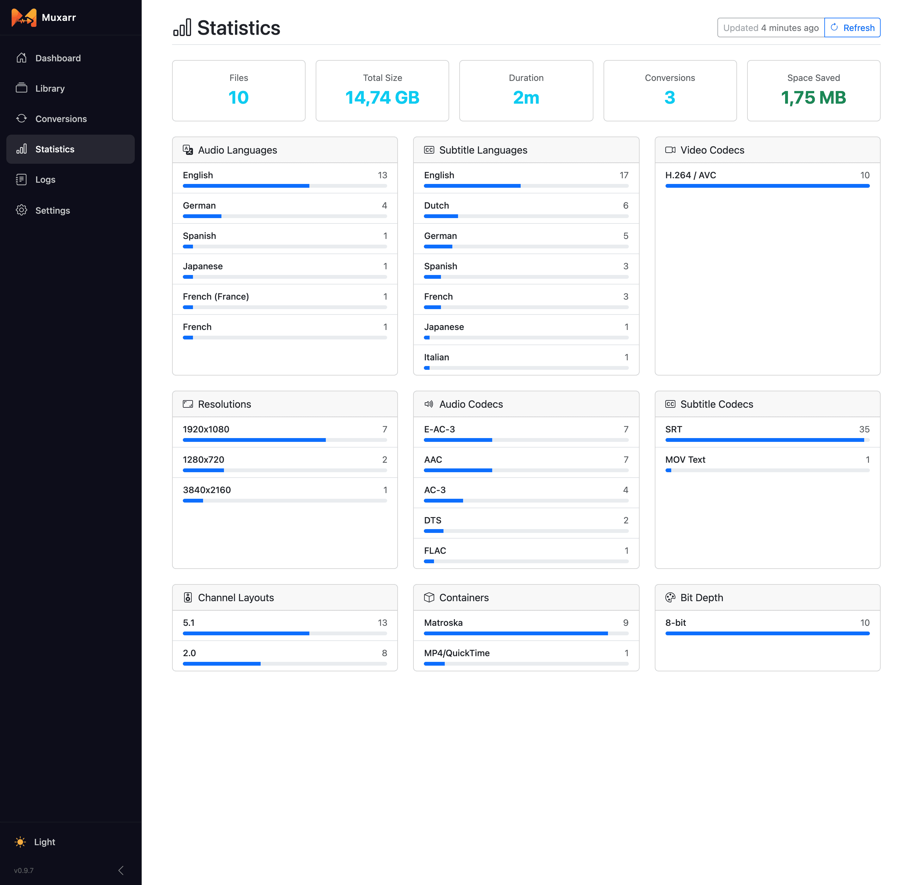

Library and conversions
Profiles say what should happen; these pages are where you watch it happen and step in when you want something different for a particular file.
Dashboard

The six counters at the top are shortcuts. Redundant Tracks opens the Library filtered to files that still have tracks your profile would remove; Metadata Issues to files whose names, flags, title or chapters differ from what the profile wants. Space Saved adds up every completed conversion. When a conversion is running, a progress card appears here too.
Scanning
A scan reads each file's tracks with ffprobe and mkvmerge and works out what the profile would change. It never modifies anything. The three buttons at the top right of the Library:
- Refresh
- Picks up new and changed files. Files that have not changed since the last scan are skipped, so this is quick.
- Force
- Re-reads every file from disk. Use it when files were edited outside Muxarr. A changed profile does not need it: Refresh (or Save Settings & Scan) re-evaluates every file against the new rules.
- Clear
- Forgets everything Muxarr knows about the library and scans from scratch. Your files on disk are not touched. Handy after moving folders around.
You can also let Muxarr scan on a schedule (Settings › Processing › Scan interval). With Sonarr and Radarr webhooks in place that is rarely needed, since new files announce themselves.
The Library

Each row shows the file, its size, when it was created and its tracks. Blue badges are audio, yellow are subtitles. Small icons on a badge tell you more:
- commentary
- hearing impaired (SDH)
- forced: a short subtitle track for foreign dialogue and signs, meant to show even with subtitles off
- dubbed
- next to a name: the file is hardlinked, meaning another path (usually a seeding download) shares the same data on disk. Only shown when the profile does not skip such files.
The search box matches file paths and titles. The All Files dropdown has the filters you will use most: Needs Track Removal, Needs Metadata Fix, Needs Any Work and Has Scan Warning. With more than one profile, a second dropdown filters by profile. Advanced opens a row of dropdowns for codecs, resolution, channel layout, languages, container, bit depth and track structure ("no subtitles", "multiple audio", and so on). Every filter is in the URL, so you can bookmark a view.
Selecting and queueing

Tick files and two buttons appear: Queue N to conversion and Batch edit N. Tick one row, then hold Shift and tick another to select everything in between. The header checkbox selects the whole page. When a filter is active you also get Queue all and Batch edit all for every matching file, not just the visible page.
Queueing skips files that are already queued or running, files that are not reachable right now (a mount that is offline), and hardlinked files when the profile skips those (normally they are not in the Library at all, but a file can become hardlinked after it was scanned). The toast tells you how many were skipped and why.
File details and preview

Click a file to see what Muxarr knows about it and, more importantly, what it plans to do. With Preview changes on, the track table shows the result of applying the selected profile:
- Grey rows marked will be removed go away.
- Struck-through text is the old value, the text after it is the new one (a renamed track, a cleared title).
- Small badges such as +Original or -SDH show flags that change; a badge marks a track that moves.
- A marks the track that will be the default.
The Profile dropdown lets you preview and queue with a different profile as a one-time override; the file's assigned profile does not change. The buttons:
- Add to Queue
- Queue the file with the selected profile.
- Custom Conversion
- Decide track by track yourself, see below.
- Analyze File
- Re-read just this file from disk.
Further down the page you find the file's recent conversions and the raw ffprobe output for when you need to see exactly what is in the container.
Custom conversion

For the one file where the profile does not fit, Custom Conversion lets you hand-pick tracks: untick the ones to drop, drag them into order, change a language, rename, and toggle default, forced, SDH, commentary and dub flags. Apply Profile fills the dialog from a profile so you only adjust what differs. At least one audio track must stay. Whole-file options like clearing the title or removing chapters come from the profile only.
Batch track edit

Batch edit is for the mistakes releases make in bulk: a whole season where the second audio track is tagged Undetermined but is really English, or subtitles named "sub" on every episode. Select the files in the Library and choose Batch edit.
Each row is a track position across all selected files. For every position you can set a language, a track name (or clear it) and turn flags on or off; anything you leave alone is not written. Apply To limits an edit to files where that position holds a particular language, which keeps you from relabelling the wrong track when files are not all the same. The Files list shows which files will change, and the Preview shows the before and after for whichever file you click. Only files that actually change are queued.
Conversions

The top card shows what is running and what is next. Conversions run one at a time. Pause finishes the current file and holds the rest; Clear Queue removes everything that has not started. Each queued row has its own cancel button.
The table below is the history, filterable by state (New, Processing, Completed, Failed) and searchable by file. Every row shows the size reduction and the tracks before and after. Selecting rows lets you delete them from the history; that only removes the record, not the file, but it does change the statistics.

Click a conversion for the details: sizes before and after, the track tables side by side and the complete log. When something fails, the log is the place to look; the last line usually says why.
Statistics and logs

Statistics gives a breakdown of the whole library: audio and subtitle languages, codecs, resolutions, channel layouts, containers and bit depth. Every bar is a link into the Library with that filter applied, which makes it a good way to hunt down odd files ("which three files still have VobSub subtitles?").
Logs shows what Muxarr has been doing, filterable by level and searchable. Errors come with an expandable stack trace and a copy button, useful when reporting an issue.